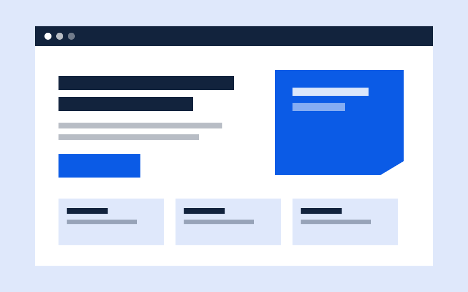

Una landing page tiene un solo trabajo: lograr que la persona haga una acción, como escribirte, reservar o comprar. Todo lo demás sobra. Estas son las piezas que reviso antes de dar un diseño por terminado.
Una página, un objetivo
Antes de dibujar nada, escribo en una frase qué quiero que haga la visita. Si la frase tiene dos acciones, hago dos páginas. Un solo objetivo permite un solo botón principal y una lectura sin distracciones.
Lo que debe verse al abrir la página
En la primera pantalla deben estar cuatro cosas: un titular que diga qué ofreces, una frase de apoyo, el botón principal y una imagen que muestre el producto o el servicio. Si la persona tiene que hacer scroll para entender de qué trata la página, ya perdió la atención.
Confianza sin exagerar
Los testimonios, las fotos reales y los datos de contacto dan seguridad. Solo uso los que existen: una reseña inventada daña la marca más de lo que ayuda.
Un formulario corto
Pido solo lo necesario. Con nombre, correo y un mensaje suele alcanzar. Cada campo extra baja la probabilidad de que alguien termine el formulario.
Revisar primero en el celular
Muchas visitas llegan desde el móvil, así que diseño primero para pantallas pequeñas y luego amplío. Compruebo que los botones sean fáciles de tocar y que el texto se lea sin acercar.
Lista de revisión rápida
- ¿Hay un solo objetivo?
- ¿El titular dice qué ofreces?
- ¿El botón principal se ve a simple vista?
- ¿El formulario pide solo lo necesario?
- ¿Se ve bien en el celular?